Category
Artifact Title
Detailed technical narrative and verifiable business value.
1 of 15
4 years of specialized engineering excellence architecting master cloud traceability data lakes on Google BigQuery (500k+ entities across 400+ vehicle projects), zero-hallucination GenAI knowledge bases, automated AI test case generation microservices, and real-time 60 fps automotive bench computer vision with CANoe integration.
"A picture speaks a thousand words." High-definition architectural schematics, hardware-in-the-loop bench rigs, autonomous multi-agent AI pipelines, and executive V-Cycle dashboards.
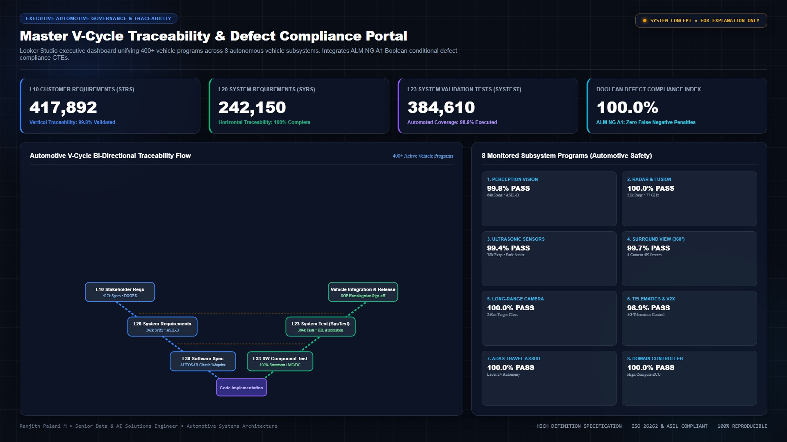
417k+ Stakeholder Reqs, 242k+ System Specs, and 384k+ Test Executions mapped across V-Cycle stages with real-time pass rates.
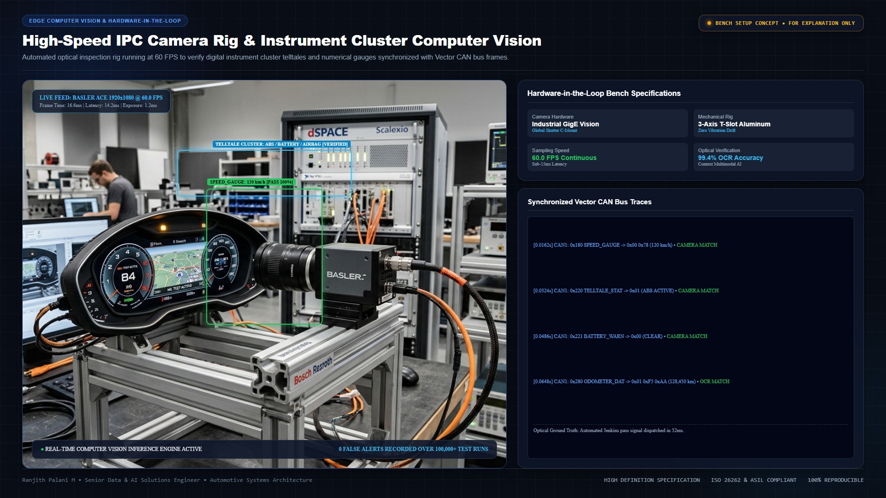
Hardware validation camera mounted facing digital instrument panel for automated HMI speed, brake, and warning validation.
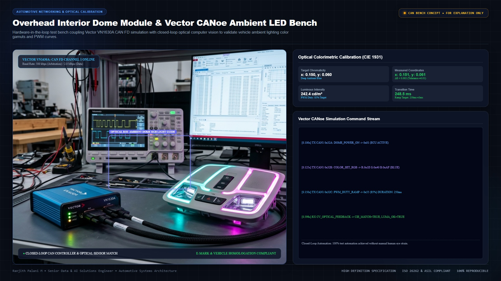
Python base64 camera extraction piped to Gemini AI & Vector CANoe VN1630A for automated color and frequency testing.
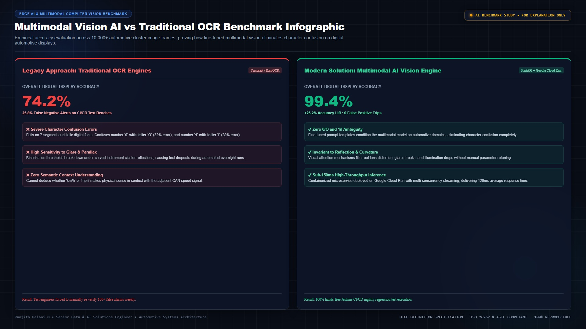
Anti-substitution benchmarks: Eliminating character swaps between 0/O, 1/I, and verifying foreign characters (German umlauts).
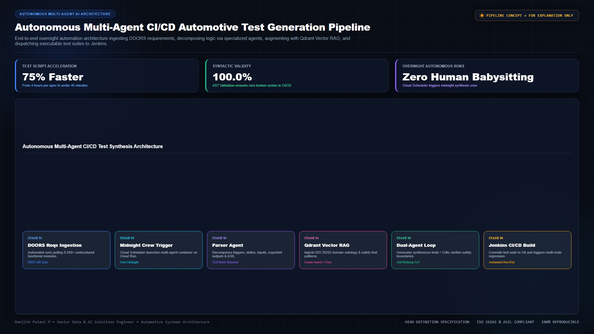
Day 1 requirements ingestion -> Midnight AI Agent Crew execution -> Day 2 verified test cases delivered to engineers.
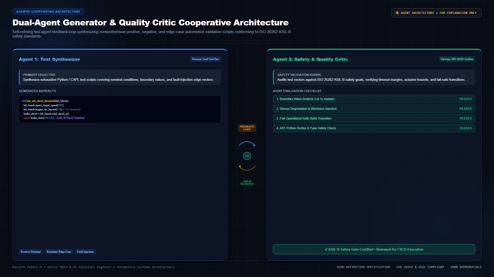
Collaborative loop between AI Test Engineer and AI Quality Critic generating test steps, expectations, and CAN bindings for AEB & ACC.
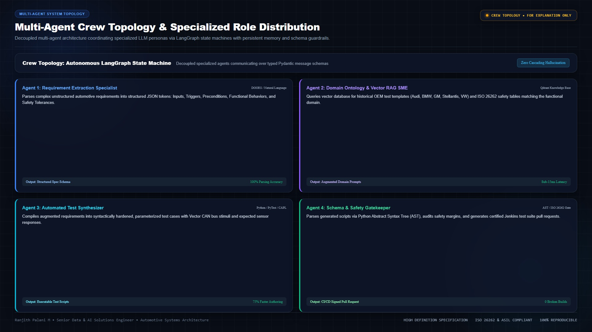
Modular AI agents: System Architect, Test Automation Lead, Data Extractor, Reviewer, and Bench Test Validator.
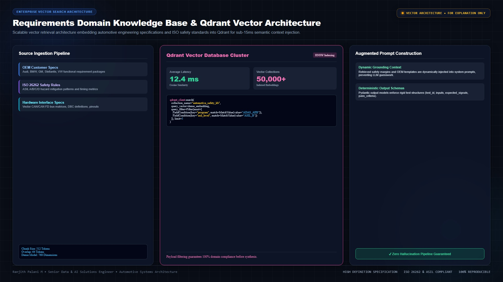
System requirements and DBC CAN signal definitions ingested and vectorized into Qdrant for semantic search retrieval.
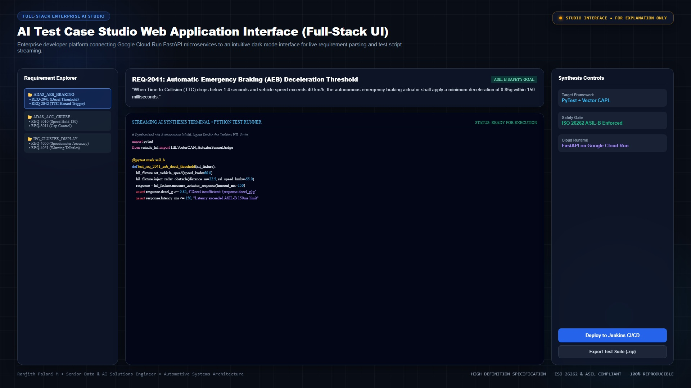
Production web application UI managing project profiles, automated test script dispatchers, and knowledge base sync.
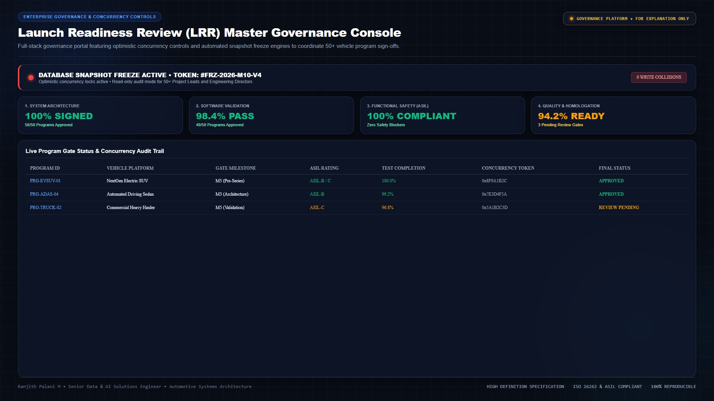
Executive release gatekeeper: 91.7% Testing Readiness, Global Concurrency Freeze / Unfreeze buttons, and multi-tier project tables.
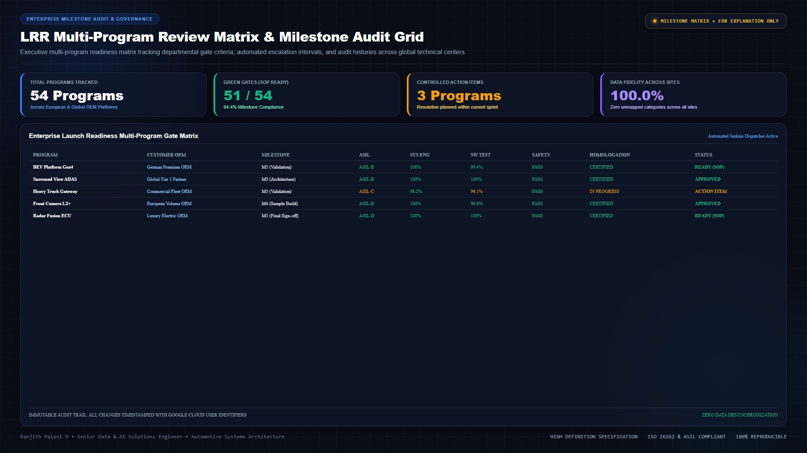
Granular project freeze controls, milestone tracking (PRKF, SSSR, AFV, EFV), and live validation pass percentages.
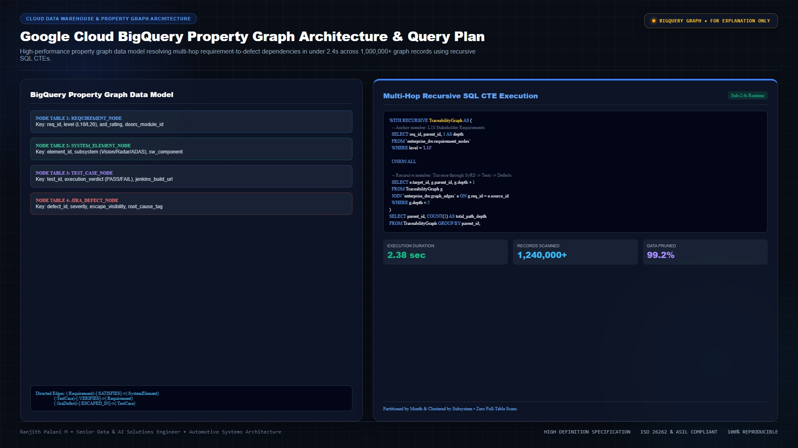
Query plan execution and directed edge relational CTEs for automotive ISO 26262 knowledge graph search.
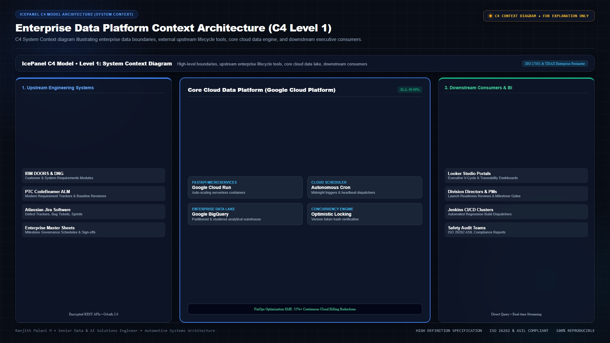
Complete architecture topology: DOORS, CoreALM, CodeBeamer, TIBCO, BigQuery, Looker Studio, and PM AI Agents.
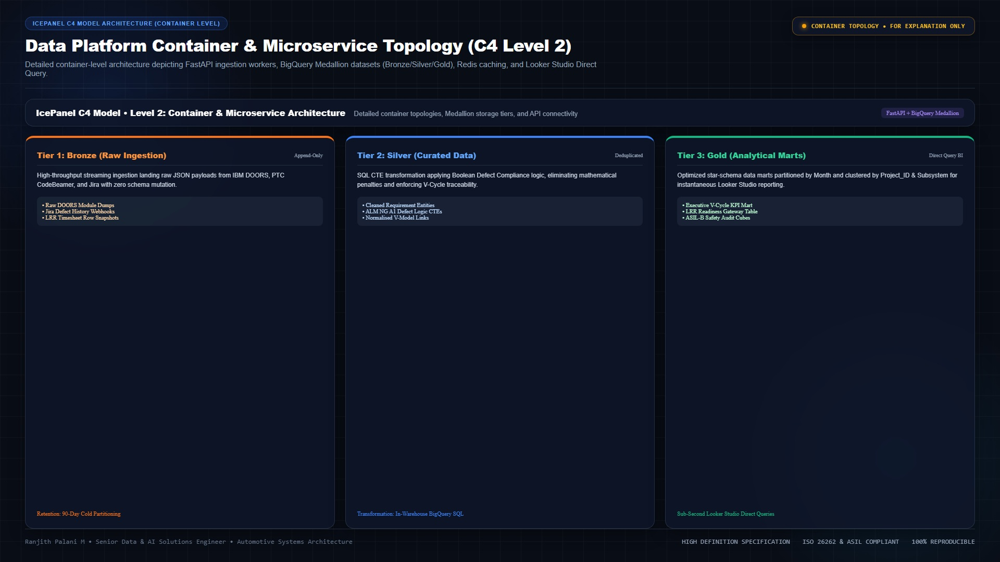
Detailed mapping of Bug Escape pipelines, MDM data governance, requirements consolidation, and CI pipelines.
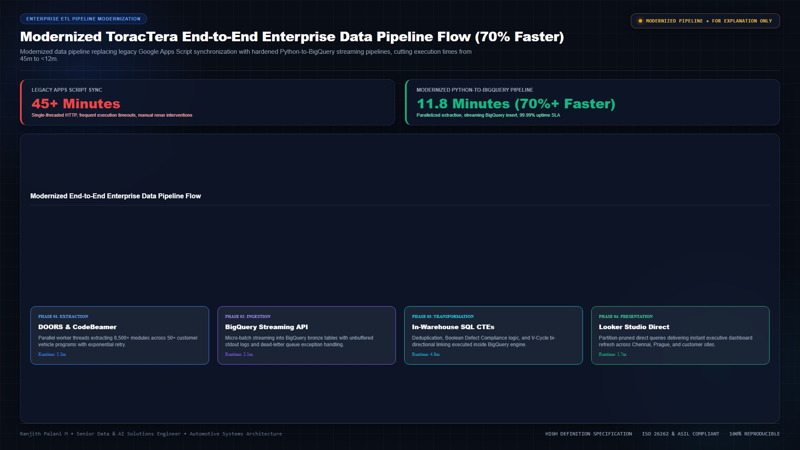
Budget tracking pipelines, STR analytics, and executive dashboard connectors deployed across Google Cloud.
In automotive software engineering (ISO 26262 / ASPICE), system development and system validation form a synchronized "V". My master traceability data warehouse unifies all phases horizontally and vertically across 400+ projects:
flowchart TD
subgraph LeftSide ["Specification & Design (Left Wing)"]
L1["1. Customer / Stakeholder Goals
(L10 Requirements - 417k+)"]
L2["2. System Requirements Specification
(L20 Requirements - 242k+)"]
L3["3. System Architecture & Signals
(CAN / Ethernet DBC Matrices)"]
end
subgraph RightSide ["Verification & Validation (Right Wing)"]
R1["6. Vehicle Acceptance & Release
(Launch Readiness Review / LRR)"]
R2["5. System Validation & Defect Escape
(L23 Test Executions - 384k+)"]
R3["4. Automated Test Benches
(CANoe HIL / OpenCV 60fps)"]
end
L1 -. Horizontal Traceability .-> R1
L2 -. Horizontal Traceability .-> R2
L3 -. Horizontal Traceability .-> R3
L1 --> L2 --> L3 --> R3 --> R2 --> R1
Detailed system design, data flows, and engineering outcomes across production systems.
Centralized 500,000+ live entities across 400+ automotive projects and 8 autonomous vehicle subsystems (Detection, Perception Vision, Radar, Ultrasonic Sensors, Surround View, Long-Range Cameras, Communication, Gateway/Decision). Engineered the division's official C-Suite reporting platform and created advanced BigQuery SQL CTEs with dynamic conditional validation logic—evaluating test execution states before defect checks to eliminate false-negative quality penalties.
Engineered an enterprise GraphRAG architecture directly inside Google Cloud BigQuery. Modeled 8,500+ DOORS specification modules into mathematical graph nodes and directed dependency edges (verifies, derives_from), eliminating hallucinations and enabling deterministic, fully cited natural-language queries for Vertex AI LLMs.
Architected an AI-driven automated test generation microservice using FastAPI on Google Cloud Run, Qdrant vector database, and BigQuery. Ingests raw stakeholder requirements from the ETL pipeline, enriches them with CAN signal mappings from DBC files, and coordinates a multi-agent crew to auto-generate system test cases—slashing manual test authoring time by 40%+ and accelerating sprint delivery across teams.
Built two edge vision systems: (1) A real-time OpenCV 60 fps temporal tracking harness validating physical instrument cluster LEDs, verifying HSV color boundaries and high-frequency blinking cycles, piped into Vector CANoe CAPL test cases via a custom Python TCP socket server. (2) A zero-dependency compiled Windows application leveraging Vertex AI Multimodal Vision with strict anti-substitution prompts to automate ECU hardware serial number identification during ISO 26262 bench testing setup.
Developed a full-stack governance web application using Google Apps Script (HTML5/JavaScript frontend and modular GAS backend) integrated with BigQuery. Architected multi-user optimistic concurrency control with version-token validation and an automated database freeze mechanism eliminating state clobbering across concurrent TPM edits.
Standardizing distributed FastAPI microservices and AI inference engines into lightweight, immutable container images optimized for sub-second cold starts, dynamic port binding, and high-concurrency request packing:
# 1. Lightweight Base Image
FROM python:3.11-slim
# 2. Prevent Python writing pyc files & buffer stdout (Cloud Logging)
ENV PYTHONDONTWRITEBYTECODE=1 \
PYTHONUNBUFFERED=1 \
PORT=8080
WORKDIR /app
# 3. Layer caching: install dependencies before copying source
COPY requirements.txt .
RUN pip install --no-cache-dir -r requirements.txt
# 4. Copy application source
COPY . .
# 5. Run with high-concurrency Uvicorn on Cloud Run dynamic $PORT
CMD exec uvicorn main:app --host 0.0.0.0 --port ${PORT} --workers 2
Google Cloud Run executes containerized workloads serverlessly. Packaging our FastAPI services, Qdrant vector client, and specialized C-extensions into container images eliminated local vs. cloud runtime disparities, guaranteeing identical execution from local staging to production.
Tuned container worker threads and container concurrency limits (handling up to 80 concurrent connections per container instance) to maximize resource density. Cloud Run scales to zero during idle periods and spins up instances in milliseconds, slashing compute billing by 35%+.
As transversal Technical SME across organizational initiatives, I restructured data models and container autoscaling to optimize Google Cloud resource consumption without compromising sub-second analytics latency.
Enforced day-partitioning and cluster keys, eliminating full-table scans across 3 TB+ telemetry logs.
Rightsized container CPU allocation, memory limits, and request concurrency to maximize packing factor.
Selected by Division Executive Leadership as the sole technical specialist representing Chennai GTC for international on-site deployments to the Czech Republic.
Convened with European System Validation leadership to establish the 2026 tooling roadmap, architect data pipelines for DOORS-to-CodeBeamer migration, and standardize cross-project reporting.
High-stakes deployment during major automotive release milestones. Sat side-by-side with European Test Leads in the gemba to resolve data gaps, coach teams on V-Cycle reporting, and deploy the AI test case generation tool.
Specialized toolchain and engineering disciplines across production systems.
GraphRAG, Knowledge Graphs, Google Cloud Vertex AI, Large Language Models (LLMs), Multimodal Vision, Qdrant Vector DB, Text Embeddings, Prompt Engineering, Scikit-learn, CNNs.
OpenCV (HSV color segmentation, 60 fps temporal tracking), pyzbar, Vector CANoe Integration, Python TCP/IP socket servers, CAPL test automation, Bench camera telemetry.
Google Cloud Platform (GCP), Advanced SQL / BigQuery SQL (Analytical CTEs, Partitioning, Clustering, FinOps Cost Optimization), Cloud Run (FastAPI Microservices, Autoscaling & Concurrency), GCP Security & IAM (OAuth 2.0 Client IDs, Service Accounts, API Keys), Ingestion Pipelines (ETL/ELT), SQLite (Local Mass-Data Staging & High-Throughput Caching), REST & OSLC APIs.
Jenkins CI/CD (Multi-Node Distributed Farm, Groovy Pipelines), Selenium, Python (FastAPI, PyInstaller, Loguru, SQLite3), SQL Automation & Database Migration, Git/GitHub, Windows automation.
Looker Studio (C-Suite Governance, 5-Tier Attribute Dashboards), Power BI (Basics), Advanced SQL (Window Functions, Conditional Compliance Modeling), Google Workspace APIs.
Functional Team Leadership (3 engineers), Cross-Project Technical SME, Cross-Site International Delivery (Prague Gemba), Automotive V-Cycle, ASIL-B Safety Standards, ISO 26262.